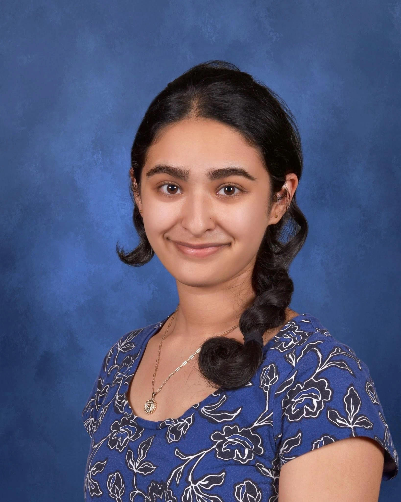

Audi Lin
I’m Audi, a rising first-year studying computer science at Carnegie Mellon University. Throughout my time at Lexington High School, I held leadership positions within LHS’s swim team, the Parity Bits(one of LHS’s robotics teams), and the LHS School Store. In my free time, I enjoy creating and trying new things!
Eli Olcott
Hi! My name is Eli Olcott. I recently graduated from LHS and I’m an incoming freshman at Harvard planning on doing computer science and philosophy. I was Captain of the Lexington Soccer Team, got on the U.S. National Futsal Team, was part of Lex STEM Youth Group, created my own custom newsletter and video game (which got banned by the school), I liked Barbie’s soundtrack a little too much, and I have recently gotten into rock climbing.

Ellen Wang
Hi my name is Ellen Wang. I recently graduated Lexington High School, where I served as editor-in-chief of the school newspaper and class officer. I am on the US International fencing team and a rising freshman at Stanford University.

Jaime Yu
Hi people! I’m Jaime, a rising freshman at Stanford who loves all things engineering and earth science. I am the former captain of various STEM clubs at LHS (envirothon, science olympiad, ocean sciences bowl), student researcher, and past team member and current mentor of the US Earth Science Olympiad Team. I spend nearly all of my free time outside from hiking, climbing and running to building random shenanigans.

Lotem Loeb
Hi! I’m Lotem and am thoroughly experienced with LPS in the realms of academics, visual arts, civic action, extracurriculars, and community service. I enjoy reading, immersing myself in nature, and listening to all types of music; and doing all three is my favorite!

Pria Sawhney
Hi! My name is Pria, I’m a rising freshman at MIT planning to study chemical engineering. At LHS, I was a club captain for FIRST Tech Challenge team 4029 and a captain of the National Ocean Sciences Bowl team.

Jason Alexander
Hi, I'm Jason, I'm a rising freshman at UMass Amherst majoring in computer science and philosophy. Throughout my time at LHS, I had a lot of fun exploring different career paths, looking for ways to combine my interests with my skills. In my free time, I like working out and playing video games.

Isabel Li
Hi! I’m Isabel, a rising freshman at Harvard majoring in neuroscience. During my time at LHS I danced ballet, led cultural events/programs, and explored neurobiology through the realms of civic impact and research. In my free time I like rewatching Ferris Bueller’s Day Off and losing at board games.

Alicia Li
Hi everyone, I’m Alicia Li, an incoming freshman at MIT. At LHS, I was part of Math Team and LexMACS, along with being the student spokesperson for Lexington in Conversation. I qualified for Math Prize For Girls 3x and have been researching and studying at MIT PRIMES for 5 years. In 2020, I founded the organization Watch To Donate, with members from around the world, using technology to allow people to donate to charity for free. In my free time, I love to dance!.